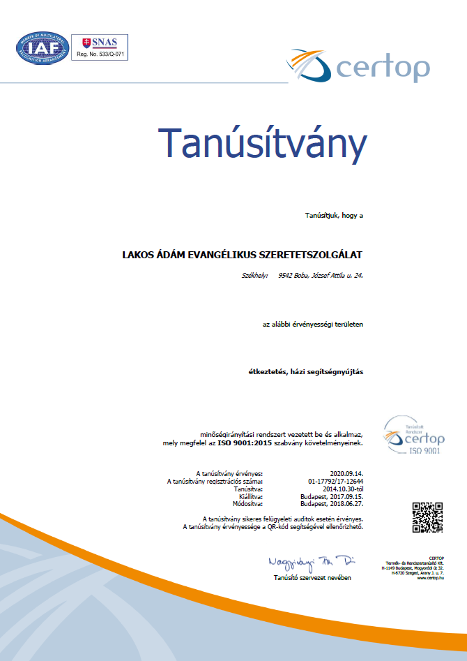
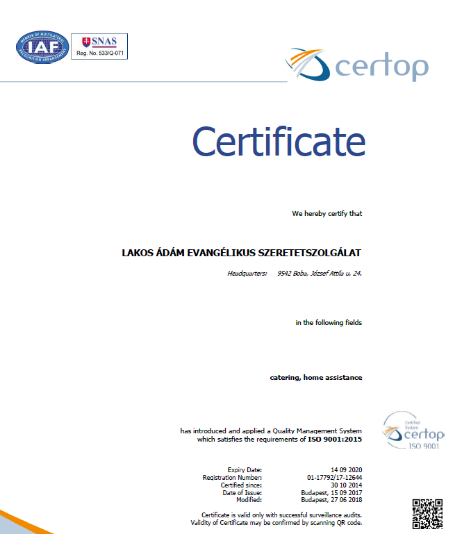

Tanusítványok
Magyar nyelvű tanusítvány
Magyar nyelvű tanusítvány a Lakos Ádám Evangélikus Szeretetszolgálat számára, étkeztetés, házi segítségnyújtás területen.
A tanusítvány az alábbi linken letölthető
Angol nyelvű tanusítvány
Angol nyelvű tanusítvány a Lakos Ádám Evangélikus Szeretetszolgálat számára, catering, home assistance területen.
A tanusítvány az alábbi linken letölthető